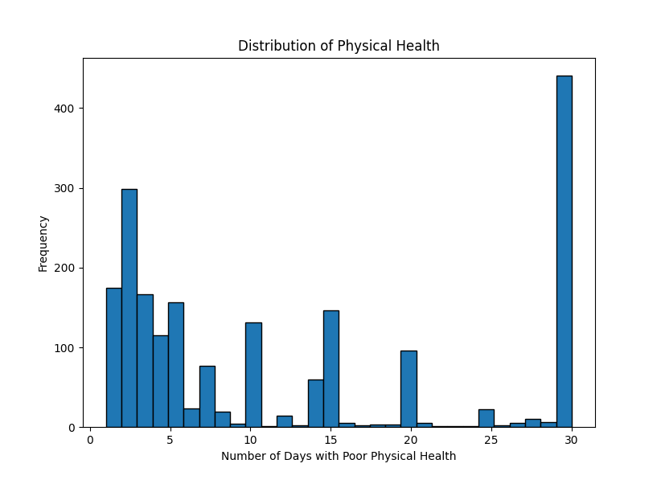
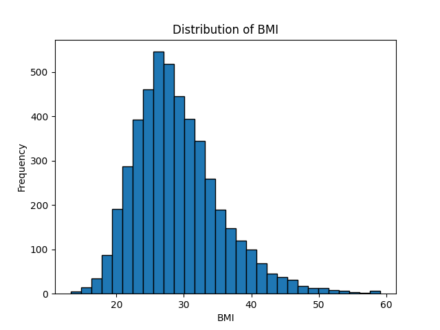
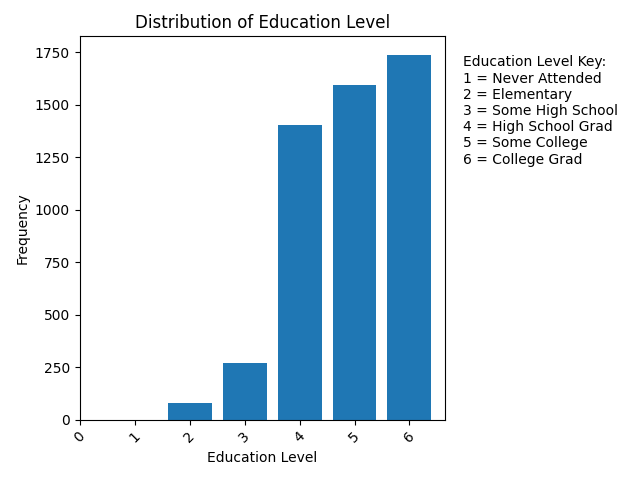
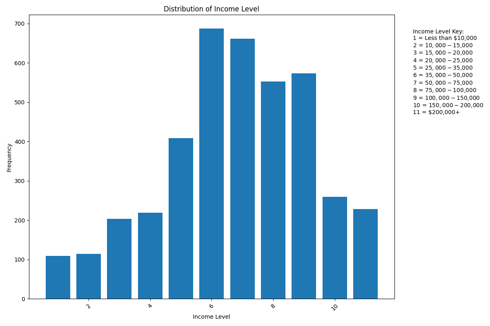
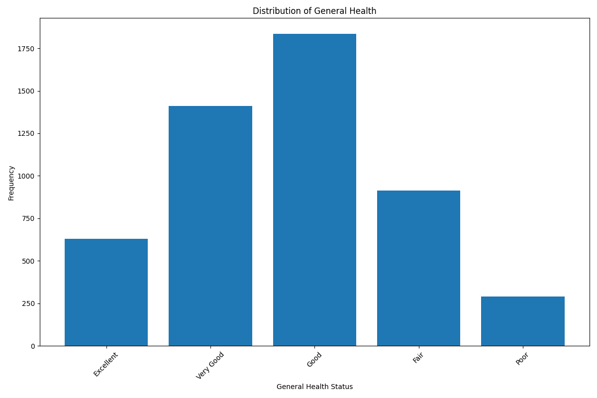
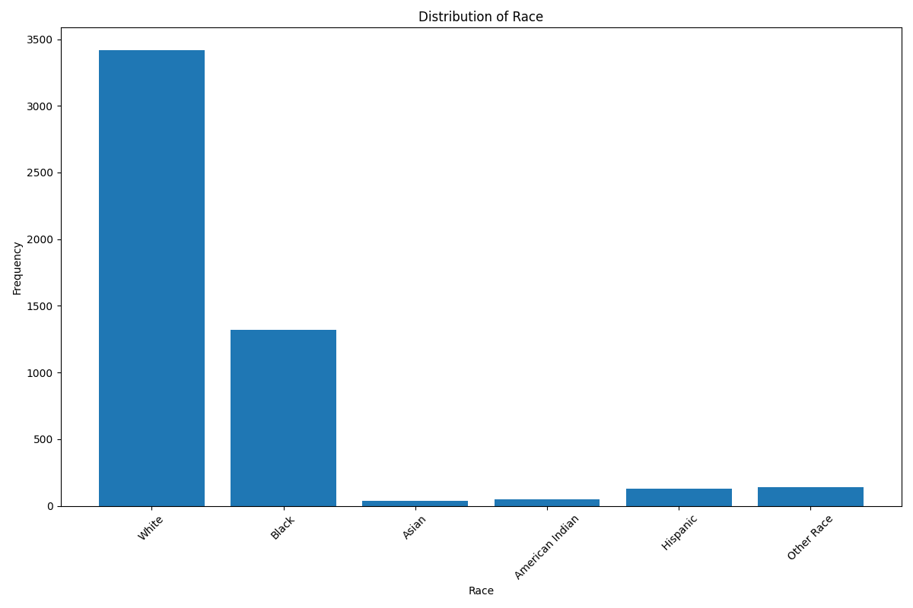
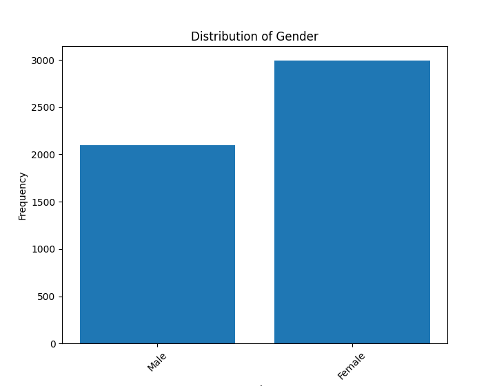
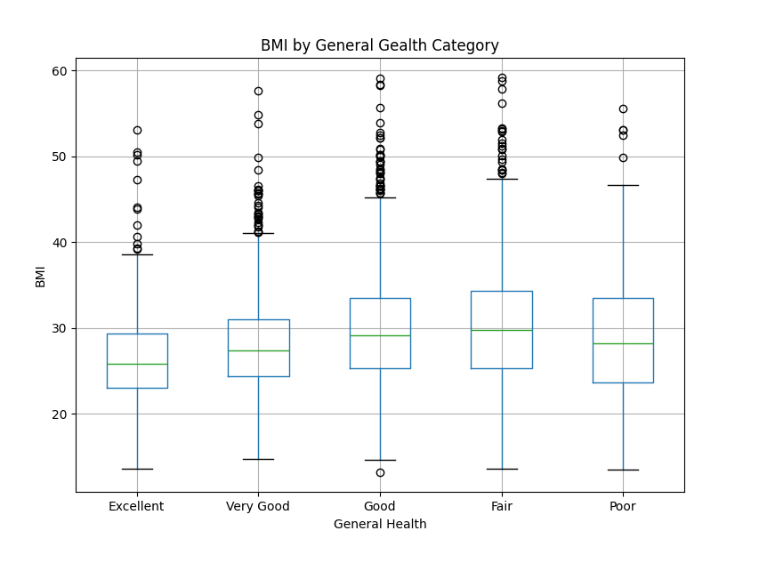
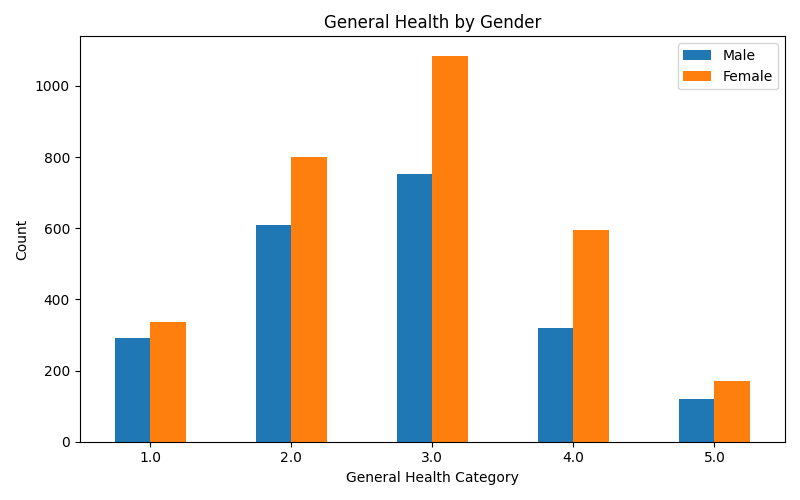
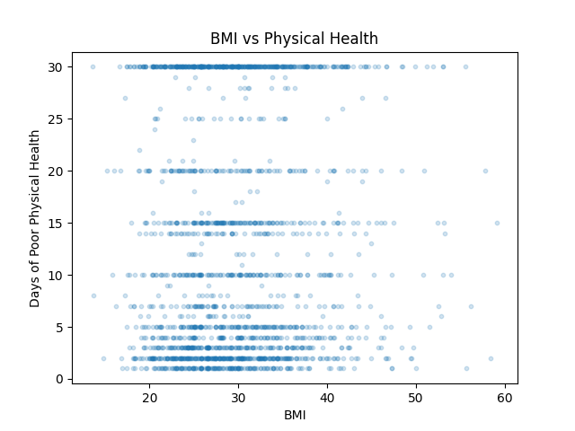

The data which was used for the visualizations in this dataset was collected by the Center for Disease Control and Prevention (CDC). This data is self reported from individuals 18+ and is directed towards understanding more about physical and mental health, lifestyle behaviors, and different demographics. For the purpose of this assignment only data collected from Alabaama has been used. The data includes bias since it is only collected from individuals 18+ which leaves out any members of the population below 18. In addition, the visualizations in this data only hold data for Alabama and no other United States' state. The data was accessed from: 2024 BRFSS Data (SAS Transport Format) [ZIP – 64.3 MB]
Summary Statistics for Number of Poor Physcial Health Days:
count 1992.000000
mean 12.383534
std 11.073359
min 1.000000
25% 3.000000
50% 7.000000
75% 20.000000
max 30.000000

Summary Statistics for BMI:
count 4803.000000
mean 29.165301
std 6.784525
min 13.190000
25% 24.550000
50% 28.190000
75% 32.550000
max 83.200000

Summary Statistics Education Level:
count 5078.000000
mean 4.915124
std 0.979243
min 2.000000
25% 4.000000
50% 5.000000
75% 6.000000
max 6.000000

Summary Statistics for Income Level:
count 4018.000000
mean 6.798656
std 2.391906
min 1.000000
25% 5.000000
50% 7.000000
75% 9.000000
max 11.000000

Summary Statistics for General Health:
count 5080.0
unique 5.0
top 3.0
freq 1836.0
Excellent: 629
Very Good: 1411
Good: 1836
Fair: 913
Poor: 291

Summary Statistics for Race:
count 5092.0
unique 6.0
top 1.0
freq 3416.0
White: 3416
Black: 1320
Asian: 39
American Indian: 47
Hispanic: 129
Other: 141

Summary Statistics for Gender:
count 5092.0
unique 2.0
top 2.0
freq 2994.0
Male: 2098
Female: 2994

Hypothesis 1: A BMI closer to 30 leads to better health

Hypothesis 2: Women more frequently rank their health higher than men.

Hypothesis 3: There is no correlation between BMI and poor physical health days
